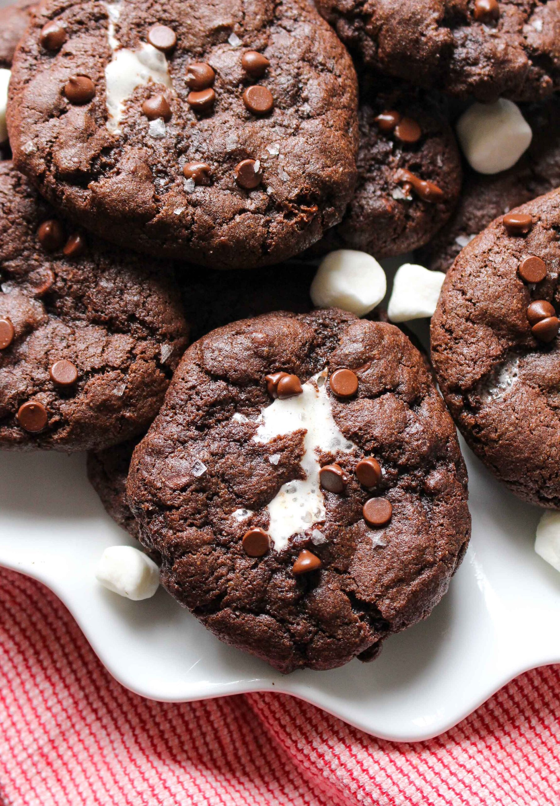

Hot Chocolate Cookies
Home

Description
The idea for these Hot Chocolate Cookies came to me one winter day as I was trying to think of a new recipe to bring to the family Christmas party. I am well known in the family for bringing some of the best and original cookies on holidays, and I always try to bring at least one new one. Well, this recipe was such a hit that it has become a staple for the winter season. Now don't get me wrong, I am not the first person to think of Hot Chocolate Cookies, so my first iteration was from a found recipe online. Over the season I have tweaked some things more to my taste and preferred consistency.
This recipe here is my final rendition; the perfect Hot Chocolate Cookie (in my opinion). I hope you enjoy these as much as I do, there is nothing like eating a favorite holiday drink!
Ingredients
- 1 cup butter (melted)
- 1 cup sugar
- 2/3 cup brown sugar
- 2 large eggs (room temp)
- 1 tsp vanilla
- 3 1/4 cups all purpose flour
- 4 packages hot cocoa mix (NOT SUGAR FREE)
- 1 tsp salt
- 1 tsp baking soda
- 2 tsp baking powder
- 1 1/2 cups dark chocolate chunks
- ~2 cups mini marshmallows
Steps
- Beat butter and sugars in a large bowl or standing mixer until light and fluffy. Add eggs and vanilla. Mix well
- In a separate bowl, combine dry ingredients. I do so by sifting them together. Gradually beat dry ingredients into butter mixture until blended. Stir in chocolate chunks.
- Cover and chill for at least 30 minutes or up to 24 hours.
- When ready to bake, preheat oven to 350 degrees. Grab about 2 Tbs of dough, flatten it slightly , and wrap about 2-3 mini marshmallows inside. You should now have a lumpy ball of marshmallow wrapped goodness.
- Place the dough balls onto the lined or sprayed baking sheet about 2 in apart. Bake 9-11 minutes or until the edges are lightly browned.
- Cool on baking sheets for ~5 minutes; remove to wire racks and finish cooling
- ENJOY!